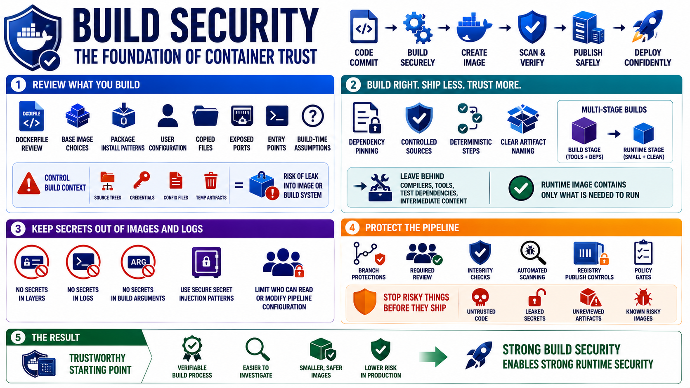

Secure Builds and CI/CD Integration
Connecting to LMS... Progress: in progress

Narration
Build security determines what enters the container supply chain. Dockerfiles and similar build definitions should be reviewed for base image choices, package installation patterns, user configuration, copied files, exposed ports, entry points, and build-time assumptions. Build context control matters because accidental inclusion of source trees, credentials, configuration files, or temporary artifacts can place sensitive material inside an image or expose it to the build system.
Reproducible build concepts help teams understand and trust their artifacts. Dependency pinning, controlled package sources, deterministic build steps, and clear artifact naming make it easier to investigate what changed. Multi-stage builds separate build-time dependencies from smaller runtime artifacts, reducing the amount of tooling and intermediate content that ships to production. The runtime image should contain what is needed to run, not everything needed to compile or test.
Secrets during build are a common failure path. Credentials used to fetch private dependencies, publish artifacts, or access registries should not be baked into image layers, printed in logs, or stored in build arguments that become visible later. CI/CD systems should provide secure secret injection patterns and limit who can read or modify pipeline configuration. The build system is part of the production trust chain.
Pipeline protections include branch protections, required review, artifact integrity checks, automated scanning, registry publishing controls, and policy gates. The point is not to make every build painful. The point is to prevent untrusted code, leaked secrets, unreviewed artifacts, or known risky images from moving quietly into production. Build security gives runtime security a trustworthy starting point.